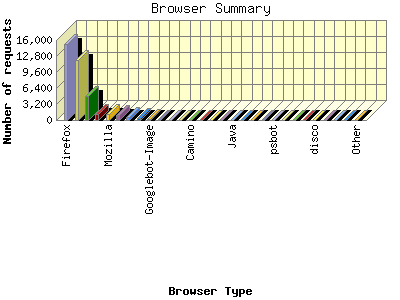
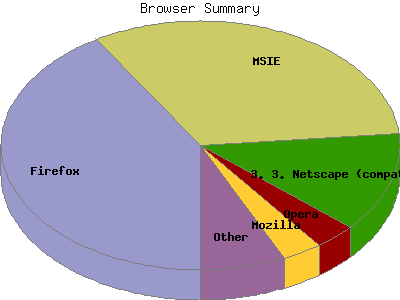

Report generated by Analog 6.0 and Report Magic 2.21
|
Web Server Statistics for "Harish Narayanan (hnarayan) - December 2007" Report generated by Analog 6.0 and Report Magic 2.21 |
The Browser Summary identifies the most popular web browsers used to visit
this site.
Browsers are broken down by recognized categories such as
Netscape Navigator/Communicator, Microsoft Internet Explorer, WebTV, Opera
and the like. Within each category is also a subgroup by version number
such as 'MSIE 5.0' or 'Netscape 4.5'.
This report shows all results. This report is sorted by number of requests.


| Browser Type | Number of requests | Number of bytes transferred | Percentage of the bytes | Percentage of the requests | |
|---|---|---|---|---|---|
| 1. | Firefox | 15,298 | 338.423 MB | 16.11% | 41.22% |
| Firefox/2 | 13,669 | 312.014 MB | 14.85% | 36.83% | |
| Firefox/1 | 1,256 | 22.678 MB | 1.08% | 3.38% | |
| Firefox/3 | 373 | 3.732 MB | 0.18% | 1.00% | |
| 2. | MSIE | 12,009 | 680.618 MB | 32.40% | 32.36% |
| MSIE/6 | 6,202 | 314.312 MB | 14.96% | 16.71% | |
| MSIE/7 | 5,751 | 360.473 MB | 17.16% | 15.50% | |
| MSIE/5 | 52 | 4.960 MB | 0.24% | 0.14% | |
| 3. | Netscape (compatible) | 4,770 | 829.400 MB | 39.48% | 12.85% |
| 4. | Opera | 1,256 | 20.057 MB | 0.95% | 3.38% |
| Opera/9 | 1,228 | 19.922 MB | 0.95% | 3.31% | |
| Opera/8 | 28 | 139.176 KB | 0.01% | 0.07% | |
| 5. | Mozilla | 1,204 | 13.565 MB | 0.65% | 3.24% |
| Mozilla/1 | 1,160 | 12.046 MB | 0.57% | 3.13% | |
| 6. | Safari | 1,037 | 51.970 MB | 2.47% | 2.79% |
| Safari/523 | 715 | 34.707 MB | 1.65% | 1.93% | |
| Safari/419 | 282 | 15.379 MB | 0.73% | 0.76% | |
| Safari/312 | 37 | 1.229 MB | 0.06% | 0.10% | |
| 7. | Konqueror | 544 | 6.815 MB | 0.32% | 1.47% |
| Konqueror/3 | 544 | 6.815 MB | 0.32% | 1.47% | |
| 8. | msnbot | 386 | 82.029 MB | 3.90% | 1.04% |
| msnbot/1 | 386 | 82.029 MB | 3.90% | 1.04% | |
| 9. | Googlebot-Image | 197 | 11.234 MB | 0.54% | 0.53% |
| 10. | msnbot-media | 78 | 1.043 MB | 0.05% | 0.21% |
| msnbot-media/1 | 78 | 1.043 MB | 0.05% | 0.21% | |
| 11. | Netscape | 63 | 2.878 MB | 0.14% | 0.17% |
| Netscape/4 | 60 | 2.319 MB | 0.11% | 0.16% | |
| Netscape/8 | 2 | 296.572 KB | 0.01% | 0.01% | |
| 12. | Ocelli | 52 | 6.201 MB | 0.29% | 0.14% |
| Ocelli/1 | 52 | 6.201 MB | 0.29% | 0.14% | |
| 13. | Camino | 33 | 468.957 KB | 0.02% | 0.09% |
| Camino/1 | 33 | 468.957 KB | 0.02% | 0.09% | |
| 14. | woriobot (+http: | 19 | 35.689 MB | 1.70% | 0.05% |
| woriobot (+http://www | 19 | 35.689 MB | 1.70% | 0.05% | |
| 15. | Python-urllib | 17 | 626.111 KB | 0.03% | 0.05% |
| Python-urllib/2 | 17 | 626.111 KB | 0.03% | 0.05% | |
| 16. | ConveraCrawler | 15 | 1.726 MB | 0.08% | 0.04% |
| ConveraCrawler/0 | 15 | 1.726 MB | 0.08% | 0.04% | |
| 17. | Java | 14 | 149.153 KB | 0.01% | 0.04% |
| Java/1 | 14 | 149.153 KB | 0.01% | 0.04% | |
| 18. | IRP_edu_bot | 13 | 197.582 KB | 0.01% | 0.04% |
| IRP_edu_bot/Nutch-1 | 13 | 197.582 KB | 0.01% | 0.04% | |
| 19. | Yandex | 13 | 211.320 KB | 0.01% | 0.04% |
| Yandex/1 | 13 | 211.320 KB | 0.01% | 0.04% | |
| 20. | Googlebot | 12 | 16.092 MB | 0.77% | 0.03% |
| Googlebot/2 | 12 | 16.092 MB | 0.77% | 0.03% | |
| 21. | psbot | 12 | 266.979 KB | 0.01% | 0.03% |
| psbot/0 | 12 | 266.979 KB | 0.01% | 0.03% | |
| 22. | Sosospider+(+http: | 8 | 28.391 KB | 0.00% | 0.02% |
| Sosospider+(+http://help | 8 | 28.391 KB | 0.00% | 0.02% | |
| 23. | Balihoo | 8 | 93.502 KB | 0.00% | 0.02% |
| Balihoo/Nutch-1 | 8 | 93.502 KB | 0.00% | 0.02% | |
| 24. | ia_archiver | 6 | 77.685 KB | 0.00% | 0.02% |
| 25. | disco | 5 | 70.334 KB | 0.00% | 0.01% |
| disco/Nutch-1 | 5 | 70.334 KB | 0.00% | 0.01% | |
| 26. | SiteBar | 4 | 2.145 KB | 0.00% | 0.01% |
| 27. | boitho.com-dc | 4 | 24.892 KB | 0.00% | 0.01% |
| boitho.com-dc/0 | 4 | 24.892 KB | 0.00% | 0.01% | |
| 28. | Speedy Spider (http: | 4 | 19.045 KB | 0.00% | 0.01% |
| Speedy Spider (http://www | 4 | 19.045 KB | 0.00% | 0.01% | |
| 29. | Grub | 3 | 23.106 KB | 0.00% | 0.01% |
| Grub/2 | 3 | 23.106 KB | 0.00% | 0.01% | |
| 30. | Yahoo-MMCrawler | 3 | 0.000 B | 0.00% | 0.01% |
| 31. | nutch | 3 | 23.106 KB | 0.00% | 0.01% |
| nutch/Nutch-1 | 3 | 23.106 KB | 0.00% | 0.01% | |
| 32. | Microsoft BITS | 2 | 223.583 KB | 0.01% | 0.01% |
| 33. | W3C_Validator | 2 | 32.144 KB | 0.00% | 0.01% |
| W3C_Validator/1 | 2 | 32.144 KB | 0.00% | 0.01% | |
| 34. | Jigsaw | 2 | 14.680 KB | 0.00% | 0.01% |
| Jigsaw/2 | 2 | 14.680 KB | 0.00% | 0.01% | |
| 35. | nutchsearch | 2 | 15.404 KB | 0.00% | 0.01% |
| nutchsearch/Nutch-0 | 2 | 15.404 KB | 0.00% | 0.01% | |
| 36. | httpunit | 1 | 1.820 KB | 0.00% | 0.00% |
| httpunit/1 | 1 | 1.820 KB | 0.00% | 0.00% | |
| 37. | Sosoimagespider+(+http: | 1 | 11.107 KB | 0.00% | 0.00% |
| Sosoimagespider+(+http://help | 1 | 11.107 KB | 0.00% | 0.00% | |
| 38. | W3C-checklink | 1 | 22.024 KB | 0.00% | 0.00% |
| W3C-checklink/4 | 1 | 22.024 KB | 0.00% | 0.00% | |
| 39. | ExtraDataWebCrawler | 1 | 7.702 KB | 0.00% | 0.00% |
| ExtraDataWebCrawler/Nutch-0 | 1 | 7.702 KB | 0.00% | 0.00% | |
| 40. | Robozilla | 1 | 7.702 KB | 0.00% | 0.00% |
| Robozilla/1 | 1 | 7.702 KB | 0.00% | 0.00% | |
| 41. | Wells Search II | 1 | 7.063 KB | 0.00% | 0.00% |
| 42. | page_verifier http: | 1 | 22.024 KB | 0.00% | 0.00% |
| page_verifier http://www | 1 | 22.024 KB | 0.00% | 0.00% | |
| 43. | mvLagqbhsrttLLkpgiwaulhsxm | 1 | 28.457 KB | 0.00% | 0.00% |
| 44. | voyager | 1 | 7.702 KB | 0.00% | 0.00% |
| voyager/1 | 1 | 7.702 KB | 0.00% | 0.00% | |
| 45. | FeedBurner | 1 | 0.000 B | 0.00% | 0.00% |
| 46. | sdblfyxxtrxpx3jjnnlmnbvqeu rqragqbhthsu | 1 | 7.084 KB | 0.00% | 0.00% |
| 47. | multicrawler (+http: | 1 | 1.820 KB | 0.00% | 0.00% |
| multicrawler (+http://sw | 1 | 1.820 KB | 0.00% | 0.00% | |
| 48. | dmoz_tool3 | 1 | 7.702 KB | 0.00% | 0.00% |
| 49. | Windows-Media-Player | 1 | 285.225 KB | 0.01% | 0.00% |
| 50. | Snapbot | 1 | 7.702 KB | 0.00% | 0.00% |
| Snapbot/1 | 1 | 7.702 KB | 0.00% | 0.00% | |
| 51. | NetNewsWire | 1 | 223.583 KB | 0.01% | 0.00% |
This report was generated on February 15, 2008 12:08.
Report time frame December 1, 2007 00:09 to December 31, 2007 23:58.
| Web statistics report produced by: | |
 Analog 6.0 Analog 6.0 |  Report Magic 2.21 Report Magic 2.21 |